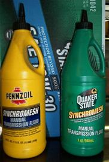
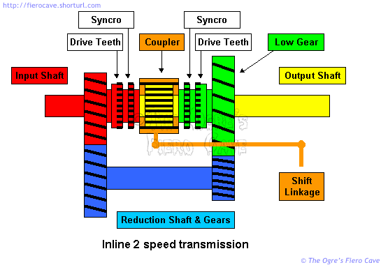

Go Home
Site Map
Go Home
Site Map
Stick up!
Fluid Guidelines for Manual Transmissions.
There have been many posts in the forums about what oil to use in the Fiero manual transmissions. I've been digging around in paperwork for a while to find which oil GM recommends in the different Fiero manual transmissions vs. the info in Haynes and other sources. This item is confusing to say the least.
I'm up to three documents from ALLDATA and GM. These documents specify one of three oils is to be used. Yes, I know this conflicts with Hayne's book that says use motor oil in the transmission. I'm still trying to figure out where that info came from and if any of it is valid. (It wouldn't be the first time that rag was wrong.)
Fluid type and capacity by transmission
This table is correct based on the listed TSB's.
| Transmission | Oil | Cap, U.S. Pint | Cap, Liters | TSB # & Date |
|---|---|---|---|---|
| 4 speed | GLS | 6.0 | 2.8 | na |
| 5 speed, Muncie | STF preferred, MTF | 4.0 | 1.9 | 88-7-17, 2/88 |
| 5 speed, Isuzu | STF preferred, MTF | 5.4 | 2.5 | 88-7-31, 5/88 |
Fluid Capacity Source: ALLdata
GLS, "Gear Lubricant, Special", I think this is actually the same
as MTF but couldn't be sure so I left it as listed in the original table...
(Apparently, GLS can mean any of several GM lubricants. I left it as listed in ALLdata.)
MTF, 5W-30 Manual Transmission Fluid, GM Part Number 01052931, 1 US Quart.
STF, Synchromesh Transmission Fluid, GM Part Number 12345349, 1 US Quart.
It appears that STF can be used in many GM FWD transmissions but I've found no official word from GM yet. I've still found no other information for the 4 speeds.
5 Speed Transmission Identification
On the side of the transmission facing the left wheel there is a cover.
Isuzu has an Aluminum cover held by 7 bolts
Muncie has a Steel cover held by 9 bolts.
Muncie 5-speed Fluid TSB
In TSB 88-7-17, dated 2/88, GM announced a fluid type change for the Muncie transmission. In 1988 they started filling them with "Synchromesh transmission fluid" (STF) at the factory and recommend filling all older Muncie 5 speed units with it as well.
GM says:
- ATF and/or Engine Oil should not be used in these transmissions!
- The STF is supposed to make the transmission shift better than with MTF.
- STF can be mixed with MTF but the more MTF there is in the system, the harder the transmisson will be to shift, especially when cold.
Isuzu 5-speed Fluid TSB
In TSB 88-7-31, dated 5/88, GM says essentially the same thing as the earlier TSB for the Muncie 5 speeds.
This TSB was issued to deal with customer complaints of stiff shifting and gear clash during cold operation. It applies to all 1983-88 Isuzu 5 speed transmissions used in Sunbird, Grand Am, and Fiero.
GM says:
- After draining and repairing any 1983-88 Isuzu 5-speed manual transmissions, it is strongly recommended that only STF be used to refill the unit.
- Refilling the unit with 5W-30 MTF is acceptable but it will not provide the lower shift efforts that the newer STF provides.
- Mixing STF with MTF is also acceptable but as the volume of MTF increases so does the shift effort.
- DO NOT USE ANY AMOUNT OF ATF IN ANY MODEL YEAR. THE USE OF ATF MAY CAUSE GEAR CLASH AND RESULT IN SYNCHRONIZER DAMAGE. (Direct Quote, GM even put it all cap's in the TSB.)
Gear Oil isn't all the same!
Be careful buying gear oil! This applies to all cars and trucks. If the manufacturer lists specific oil, like GM does with STF, use it or something that meets those same specifications. GM isn't pushing their oil just to make a quick buck. It really does matter what oil is used, as many forum readers will tell you.
There's allot of debate about synthetic vs. crude base but when we're talking about gear oils this is really a minor issue. The major issue is what API service category to use. (The API service category is usually printed someplace on the product label. It's also listed in most product info on the web.)
Most "Gear" oil products sold at retail are formulated to meet American Petroleum Institute (API) GL 5 specifications. While the label on these products says it can be used in transmissions, it's too heavy for most cars. Even the lighter weights of GL 5 oil are too stiff to work properly with allot of car transmissions.
In cars, GL 5 oils are mainly used for the hypoid gear sets used in traditional RWD vehicles. These gears operate at very high pressures and are a very high friction design when compared to the gears in a transmission. (For an explanation of gear types, visit "How Gears Work" at HowStuffWorks.com)
The majority of GL 5 oil is not formulated to work with synchromesh or limited slip systems. When used in certain types of axles, these oils require use of a "limited slip additive". To confuse things a bit more some vendors, like Redline and Royal Purple, sell products with the limited slip additive already in them....
Most car transmissions I've seen specify oil meeting API GL 4 specifications. (Redline's MTL and MT 90 transmission products are GL 4 rated) These oils often list similar weight as GL 5 on the label but are more compatible with many transmissions. They don't stiffen as much when cold as GL 5 oils.
Redline has a side by side comparison of their oils in an Acrobat document available on their website. Look at the "Vis @ 40C" number. Lower is better.
You can find the same info from Texaco and others but you'll likely need to dig thru several documents. For example, Havoline 80W-90 GL 5 gear oil has a viscosity (cSt at 40oC) of 137 while their Synchromesh fluid is 41.6. This info is from 2 different Texaco Acrobat files.
Check whatever bottle you pick up carefully. Some brands use labels that are very similar on different products. Example, Castrol Hypoy brand gear oil is GL 4 while Hypoy C is GL 5. At a quick glance the labels look identical. It is very easy to grab the wrong bottle if they are racked together at the store.
Note... I've been told that GL 5 oil is also corrosive to brass parts but haven't confirmed it yet. Either way, you do not want GL 5 in a Fiero transmission.
Where can I get the stuff?
Synchromesh fluid is available from sources besides your local GM dealer. In this thread, Jelly2m8 says,
I can get the QS [Quaker State] at my local NAPA, they carry it in stock.
My local Autoplus carries the Pennzoil, and they can order the QS if need be.
As you see, I have bottles of both kicking around. I just buy whichever brand the particular store I'm in carries. [His picture --->]
I've run the GM, QS and Pennzoil brands in my own cars, and they look, smell, and taste (yes taste...;p) the same. [Yuck.]
Don't let anybody tell you to buy the GM stuff because it's the best, GM does not have their own refinery.
Just find a store that sells QS or Pennzoil products, and they can order it in.
I just checked an invoice, the Pennzoil Synchromesh sells for 8.90 canuk a quart, that is less than 6 bux US a quart. [08-22-2002]
I've also seen the Pennzoil in 5-gallon pails. These are less expensive for shop use. Oil-Store.com lists it for $71.95. That's about $3.60 a quart. You should be able to order the pails thru any Pennzoil distributor.
Pennzoil and Quaker State are actually one companny. I doubt if there is any difference between these brands besides the packaging. (At the time of this posting, they are being bought by Shell.) Both brands have STF in quarts but only Pennzoil brand is available in pails.
When trying to find hard to get items, like Synchromesh oil, always check the local independent and franchised parts stores. (Many NAPA stores are franchisees.) What they don't stock they can often order from the regional warehouses the same or next day. The larger chain stores may also be able to order things but are not always as flexible.
I can no longer find the info for Texaco Synchromesh fluid online. Texaco makes most, if not all, GM fluids. Many are available retail under the Havoline brand. Try your local Texaco distributor. (All the Synchromesh Product and MSDS info that was available has been removed from Texaco web sites.)
Redline has products specifically formulated for manual transmissions. I don't know if they meet GM specs. Some people are using it so I dug out the link. Some people swear by it while others like GM STF better. (Don't ask me, I drive an automatic. I'm long ago sick of fighting with stick in heavy traffic.)
The Lubizol Corporation provides a general discussion of Gear Lubricants in their Ready Reference for Lubricants and Fuels.
What is a Syncro?
Keep in mind that when you "change gears" there are no gears moving. You are actually moving couplers on and off different splines inside the transmission. The only time an actual gear might move is reverse in some transmissions.
There are a couple methods used to synchronize gear changes. They each produce the same result but go about it in different ways. I'm going to show you one method I've dealt with here. You can see another example at How Stuff Works. (I found the HSW article after I'd already done this one. It's probably more like what the Fiero transmissions use. Mine is like what most inline transmissions do.)
The syncro is a ring with teeth on it. The ring has some spring-loaded brake pads inside it. The coupler mentioned above hits the syncro ring which speed matches the drive teeth to the coupler before they meet. This prevents the grinding of the teeth. A syncro only gets a small amount of use for a second or so as you change gears.

In the diagram above we have a very simple 2 speed transmission for a traditional rear wheel drive car. The components in any other manual transmission are arranged differently but the function is the same. (It's allot easier to draw this way.) In a real 4 speed transmission this would be the third and fourth gear set. The first and second gear set floats on the output shaft behind the set above.
The example transmission is in first gear when the output shaft coupler is locked to the green gear. Keep in mind the low gear has bearings in it and is only floating on the output shaft.
Our little transmission is in second gear when the coupler is locked to the red input shaft. It is typical for at least one "gear" in most transmissions to simply lock the input and output shafts together. This is 4th gear in most 4 speed transmissions and some 5 speeds.
When the coupler is sliding toward either gear it first encounters the Synchromesh ring. This ring acts to brake or accelerate the drive teeth to the same speed as the coupler. This prevents "grinding gears." The sound you hear when you blow a shift isn't the gear but the drive teeth grinding against the coupler.
Keep in mind the syncro isn't attached to but floating on the gear assembly. The syncro is an independent part with spring-loaded brake pads inside it. These pads drag on the gear to make the speeds of the coupler and the drive teeth match before the coupler gets all the way across to lock the gear in. The syncro itself is shown better in the diagram below.